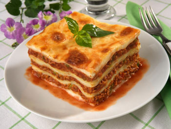

Home
Lasagna

Description
Rich layers of tender pasta, savory meat sauce, creamy béchamel, and melted cheese – lasagna is the ultimate
comfort food. This classic Italian dish brings warmth and flavor to any table, perfect for family dinners or
special occasions. Follow our simple steps to create a lasagna that’s hearty, delicious, and sure to impress.
Ingredients
- 12 lasagna sheets (pre-cooked or regular)
- 500 g (1 lb) ground beef or a mix of beef and pork
- 1 large onion, finely chopped
- 2 cloves garlic, minced
- 800 g (28 oz) canned chopped tomatoes
- 2 tbsp tomato paste
- 2 tbsp olive oil
- 1 tsp dried oregano
- 1 tsp dried basil
- Salt and black pepper, to taste
- 50 g (½ cup) grated Parmesan cheese
- 200 g (2 cups) shredded mozzarella
- 50 g (4 tbsp) butter
- 50 g (⅓ cup) all-purpose flour
- 750 ml (3 cups) milk
- A pinch of nutmeg
Steps
-
Prepare the meat sauce: Heat olive oil in a large pan over medium heat. Add the chopped onion and
cook until soft. Stir in garlic and cook for another 1–2 minutes. Add the ground meat and cook until
browned.
-
Stir in tomato paste, chopped tomatoes, oregano, basil, salt, and pepper. Let the sauce simmer for about
20–25 minutes, stirring occasionally.
-
Make the béchamel sauce: In a saucepan, melt the butter over medium heat. Add the flour and whisk for
1–2 minutes. Gradually add the milk while whisking to avoid lumps. Cook until thickened, season with
salt, pepper, and a pinch of nutmeg.
-
Assemble the lasagna: Preheat your oven to 180 °C (350 °F). Spread a thin layer of meat sauce in the
bottom of a baking dish. Place a layer of lasagna sheets on top, then spread béchamel sauce over them,
followed by some meat sauce and a sprinkle of mozzarella. Repeat the layers until all ingredients are
used, finishing with béchamel on top.
-
Sprinkle with grated Parmesan and the remaining mozzarella.
-
Bake: Place in the oven and bake for 30–40 minutes, until the top is golden and bubbling.
-
Remove from the oven and let it rest for 10 minutes before slicing and serving.